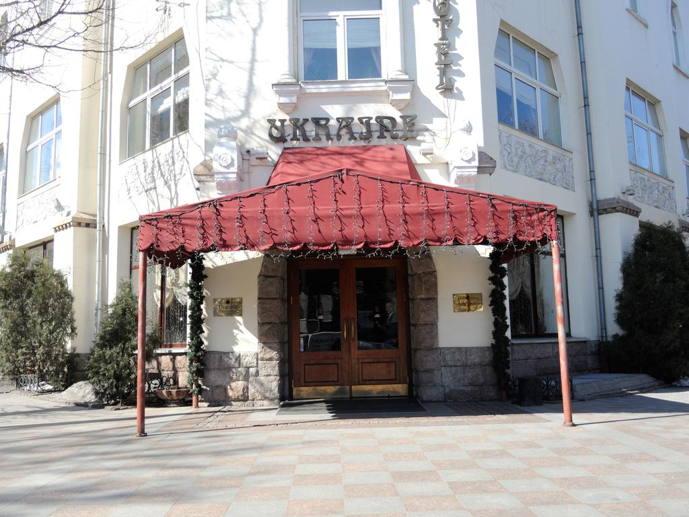
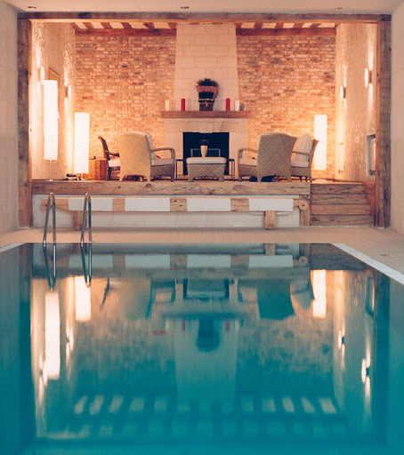
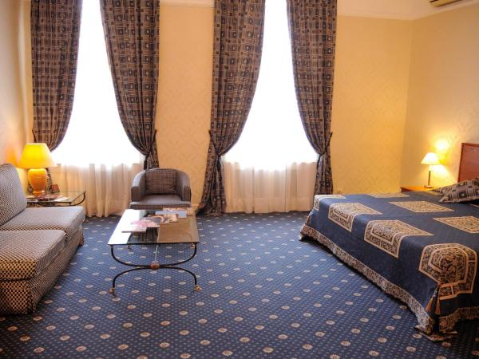

Отель расположен на центральном проспекте Днепропетровска. К услугам гостей круглосуточная стойка регистрации, бесплатный спа-центр с бассейном и бесплатный Wi-Fi на всей территории. Производится доставка еды и напитков в номер. Ежедневно в отеле сервируют завтрак. Номера обставлены элегантной мебелью и оснащены кондиционером. В распоряжении гостей телевизор с плоским экраном, рабочий стол, халат, тапочки и туалетно-косметические принадлежности. В ресторане подают блюда традиционной украинской и европейской кухни. Напитки можно заказать в баре и уютном лаундже с камином. В оздоровительном клубе отеля к услугам гостей бассейн, сауны, гидромассажная ванна и тренажерный зал. Гости смогут заказать сеанс массажа. Отель находится в 10 минутах ходьбы от стадиона «Днепр Арена», Днепровского театра оперы и балета и реки Днепр. Расстояние до международного аэропорта «Днепропетровск» составляет 11,5 км. Это любимая часть города Днепр среди наших гостей согласно независимым отзывам.
Grand Hotel Dnipro


